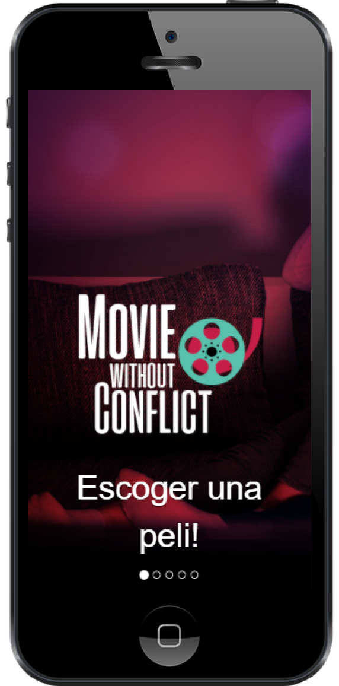
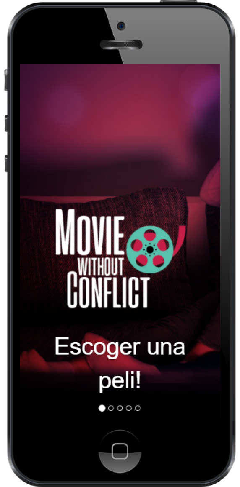

YENNY QUIÑONES

SOBRE MÍ
Hola! , soy UX Designer y Bachiller en Ing. de Sistemas e Informática.
Me apasiona el proceso de diseño de experiencia de usuario: desde la identificación de la necesidad del cliente hasta las pruebas del prototipo.
Me agrada trabajar en equipos multidisciplinarios por lo rico en los aportes reunidos para resolver necesidades reales de los clientes, alineados a los objetivos del negocio y resueltos con tecnología factible.
En futuro deseo especializarme como UX Líder de Proyectos y emprender una Startup.
HABILIDADES
Soft Skills
" Importancia por el desarrollo personal"
Metodología - Design Thinking
" Tener un método de trabajo orienta el logro de los resultados "
Tech Skills

" Importancia por el self learning"
PROYECTOS
LIBÉRATE

Reto Individual , se desarrolló en la especialidad de UX Designer, teniendo como problema el "mejorar la agenda de citas psicológicas", siendo los usuarios: Psicólogos y Pacientes.
Mi rol es realizar el proceso Ux Designer según Metodología Design Thinking, el cual es un proceso constante
Libérate es una aplicación móvil , que le permite al Psicólogo registrar su perfil, servicios, horarios y confirmar citas. Y al Paciente registrar su perfil, visualizar profesionales psicólogos, solicitar y confirmar citas.
OBCHOD


Reto Grupal , se desarrolló en la especialidades de UX Designer/ Front - End, para "mejorar el contacto con personas con oficio", siendo los usuarios: Clientes y Personas con Oficio
Mi rol, como Ux Designer,elaboré la propuesta de la necesidad de usuario y documentación, en grupo desarrollamos la investigacióh hasta el prototipo. Como Front-End desarrollé la vista de Lista de Servicios en maquetación y funcionalidad.
Obchod es una Red-Social que opera en un website responsible, donde las personas con un oficio podrán registrar su perfil y servicios. El cliente podrá encontrar los servicios de un personal con oficio. Cubriendo así la necesidad de contar con un espacio de interacción entre las partes que sea confiable, amigable, fácil y rápida de usar
MOVIE WITHOUT CONFLICT
Ganador 1er Puesto 1era Hackaton Interna
 
 Reto Grupal , se desarrolló en la especialidades de UX Designer/ Front - End, para "mejorar la experiencia de elegir y ver una película", siendo los usuarios: Una o más Personas que van a ver una película
Mi rol, como Ux Designer, participé en el desarrollo de la investigación. Elaboré la propuesta de prototipo de arq. de información y la documentación del proyecto. Como Front-End apoyé en las pruebas de código y elaboración de algoritmo. En el proyecto, asumí el rol de organización y facilitador del grupo.
Movie Without Conflict es un website responsible, que permite que una o más personas ingresen sus preferencias de género de películas, brindándoles un grupo de selecto de películas comunes , de manera aleatoria, adicionalmente te muestra el detalle de la información de cada película sugerida!